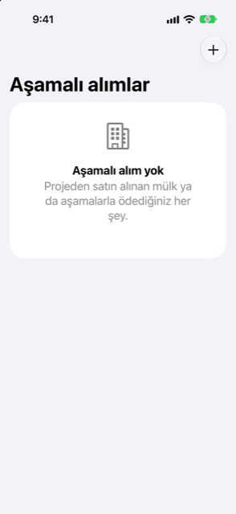

Kılavuz › Varlıklar
Aşamalı alımlar
Sıfır konut ya da aşamalar hâlinde ödenen her şey.
Aşamalı alım, tarihleri belirli aşamalar hâlinde ödediğiniz bir şeyin — örneğin sıfır konutta satılan bir dairenin — Damla'daki kaydıdır. Ne kadar ödediğinizi ve neyin beklediğini gösterir. Önünüzdeki ödemeler tahmininize girer, böylece her aşamanın vadesi geldiğinde para hazır olur.

Ne zaman kullanılır
- Sıfır konut satın alıyorsunuz ve inşaat firması bilinen tarihlerde ödemeler istiyor.
- Bir arsa ya da parça parça ödenen büyük bir sipariş gibi başka bir şeyi de aşamalar hâlinde ödüyorsunuz.
- Peşinat gibi ona yapmış olduğunuz bir ödeme zaten var ve bunun sayılmasını istiyorsunuz.
- Mülkün teslim edildiğinde net varlığınızda bir holding olarak görünmesini istiyorsunuz.
Nerede bulunur
Plan sayfasını açın, sonra Aşamalı alımlar. Bir aşamalı alıma, Hesaplar ekranında Varlıklar bölümünden de ulaşabilirsiniz.
Adım adım
Bir tane oluştur
- Aşamalı alımlar ekranında Ekle düğmesine dokunun (artı düğmesi).
- Bir ad, inşaat firması ya da satıcı (isteğe bağlı) ve Toplam fiyat girin; sonra Genelde ödenen hesap alanına hesabı girin.
- Damla'dan önce ödenen bölümünde, önceden ödemiş olduğunuz tutarı Önceden ödenen altına, tarihini ise Ödeme tarihi altına girin. Bu ödeme yapılmış sayılır ve hiçbir hesap bakiyesi değişmez.
- Bekleyen ödemeler altında, bildiğiniz tarihli her ödemeyi ekleyin: bir Vade tarihi ve bir Tutar. Her biri için Bir ödeme daha ekle düğmesine dokunun.
- Kaydet düğmesine dokunun.
Alımın sayfasında, ilerleme çubuğunu, fiyatı, ödeneni, Planlanan olanı ve Henüz planlanmadı olanı gösteren bir Şimdiye kadar ödenen kartı görünür.
Güncel tutma
- Alımı açın.
- Tarihini ya da tutarını değiştirmek için bir ödemeye dokunun, ya da silmek için kaydırın. Bir ödeme eklemek için Ödeme ekle düğmesine dokunun.
- Toplam fiyatı değiştirmek için Fiyat satırına dokunun.
- Damla'yı kullanmaya başlamadan önce yaptığınız bir ödemeyi unuttuysanız, Damla'dan önce ödenen bölümünü kullanın: tutarı ve tarihi girin, sonra Kaydet düğmesine dokunun.
- Bir taksitin ödemesini bir hesaptan yaptığınızda, Ödeme kaydet seçeneğini kullanın: tutarı girin, Ödeme kaynağı seçin ve Kaydet düğmesine dokunun. Kaydedilen ödemeler önce en erken planlanmış ödemelere gider.
Listedeki her ödeme tarihini, tutarını ve hâlâ kalan kısmı gösterir: ödenmiş ibaresi hiçbir şey kalmadığında, ya da gecikmiş ise kırmızı renkte kalan tutar ile vadesi geldi ibaresi.
Teslim etme
- Alımın sayfasında Teslim edildi: Yatırımlara taşı düğmesine dokunun.
- Mülkün değeri alanına bugünkü piyasa değerini girin.
- Damla, planlanmış ödemelerin ne kadarının tahmininizden çıkarılacağını söyler, ya da ödenecek hiçbir şey kalmadığını bildirir.
- Onaylamak için Yatırımlara taşı düğmesine dokunun.
Alım artık aşamalı bir alım olmaktan çıkar ve bir holding olur: ödemiş olduğunuz tutar maliyeti olarak kalır, girdiğiniz piyasa değeri ise onun kıymeti olur. Bkz. Mülk ve arabalar.
Bilmekte fayda var
İlgili
Anlaşılmayan ya da eksik bir şey mi var? support@raveniq.ai adresine yazın ve hangi sayfa olduğunu belirtin.